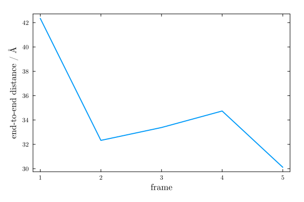

Simulation
The Simulation object is the central data structure of MolSimToolkit. It holds the atom data, the trajectory file, and the current frame. Most analysis functions in MolSimToolkit accept a Simulation as their primary argument.
Iterating over frames
The standard way to process a trajectory is to iterate over all frames with a for loop:
using MolSimToolkit, MolSimToolkit.Testing
sim = Simulation(Testing.namd_pdb, Testing.namd_traj; first=2, step=2, last=4)
for frame in sim
@show frame_index(sim)
@show positions(frame)[1]
endframe_index(sim) = 2
(positions(frame))[1] = [2.001203775405884, 7.035768985748291, 43.27251434326172]
frame_index(sim) = 4
(positions(frame))[1] = [-0.39684221148490906, 12.047886848449707, 37.44126892089844]The pairs iterator yields (frame_index, frame) tuples — useful when you need the actual frame number in the trajectory:
for (i, frame) in pairs(sim)
@show i, frame_index(sim)
end(i, frame_index(sim)) = (2, 2)
(i, frame_index(sim)) = (4, 4)enumerate yields (counter, frame) tuples — useful when you just need a sequential count:
for (i, frame) in enumerate(sim)
@show i, frame_index(sim)
end(i, frame_index(sim)) = (1, 2)
(i, frame_index(sim)) = (2, 4)Example: end-to-end distance
As a simple illustration, we compute the end-to-end distance of the protein (distance between the C$_\alpha$ atoms of the first and last residues) across all frames, applying periodic boundary conditions when wrapping the second atom position.
using MolSimToolkit, MolSimToolkit.Testing
using PDBTools
using Plots: plot
sim = Simulation(Testing.namd_pdb, Testing.namd_traj)
# Indices of the Cα atoms of the first and last residues
ats = get_atoms(sim)
protein_ca = findall(sel"protein and name CA", ats)
i1, i2 = first(protein_ca), last(protein_ca)
# Iterate over frames and compute end-to-end distances
end_to_end = Float64[]
for frame in sim
p = positions(frame)
p1 = p[i1]
p2 = wrap(p[i2], p1, unitcell(frame)) # apply PBC
push!(end_to_end, distance(p2, p1))
end
end_to_end5-element Vector{Float64}:
42.3506959154055
32.32651999592368
33.38388153244739
34.739991307891934
30.118300797521297We can plot the result as a function of the frame number:
plot(MolSimStyle,
frame_range(sim), end_to_end;
xlabel="frame",
ylabel="end-to-end distance / Å",
label=nothing,
)
Creating a Simulation
MolSimToolkit.Simulation — Type
Simulation(pdb_file::String, trajectory_file::String; frames=[1,2,3,5])
Simulation(pdb_file::String, trajectory_file::String; frames=9:2:20)
Simulation(pdb_file::String, trajectory_file::String; first=1, last=nothing, step=1)
Simulation(atoms::AbstractVector{<:AtomType}, trajectory_file::String; first=1, last=nothing, step=1)Creates a new Simulation object.
The first constructor creates a Simulation object from a PDB or mmCIF file and a trajectory file. It will use the PDBTools.Atom for the atom type, which will populate the atoms vector of the Simulation object. Currently, other atom types are supported, if the MolSimToolkit.atomic_mass(::AtomType) function is defined for the atom type.
With the second constructor, the atoms vector is passed as an argument. This is useful when the atoms are provided by a different source than the PDB file.
The frames or first, last, and step arguments can be used to specify the frames to be iterated over:
framescan be a vector of frame indices, e. g.,frames=[1,2,3,5]orframes=9:2:20.first,last, andstepare Integers that specify the frames to be iterated over. Iflastis not specified, the last frame in the trajectory will be used.
A Simulation object contains a trajectory file and a PDB data of the atoms. It can be iterated over to obtain the frames in the trajectory. The Simulation object is a mutable struct that contains the following data, that can be retrieved by the corresponding functions:
frame_range(::Simulation): the list of frames to be iterated overframe_index(::Simulation): the index of the current frame in the trajectorylength(::Simulation): the number of frames to be iterated over in the trajectory file, considering the current rangeraw_length(::Simulation): the number of frames in the trajectory fileget_atoms(::Simulation; frame=nothing): get vector of atoms of the simulation,frame=nothing, the positions of the current frame will be returned.
The Simulation object can also be manipulated by the following functions:
close(::Simulation): closes the trajectory filerestart!(::Simulation): restarts the iteration over the trajectory file, current frame is the first frame.first_frame!(::Simulation): restarts the iteration over the trajectory file and places the current frame at the first frame in the trajectorycurrent_frame(::Simulation): returns the current frame in the trajectorynext_frame!(::Simulation): reads the next frame in the trajectory file and returns it. Moves the current frame to the next one.set_frame_range!(::Simulation; first, last, step): resets the range of frames to be iterated over.get_frame!(::Simulation, iframe): returns the frame at the given index in the trajectory.goto_frame!(::Simulation, iframe): similar toget_frame!, but returns theSimulationobject placed in the desired frame.
One important feature of the Simulation object is that it can be iterated over, frame by frame.
The pairs iterator can also be used to iterate over the frames, returning a tuple with the frame index and the frame itself.
The enumerate iterator can also be used to iterate over the frames, returning a tuple with the frame counter and the frame itself.
Examples
julia> using MolSimToolkit, MolSimToolkit.Testing
julia> simulation = Simulation(
Testing.namd_pdb, Testing.namd_traj;
first = 2, step = 2, last = 4,
# or frames = [2,4]
);
julia> for frame in simulation
@show frame_index(simulation)
# show x coordinate of first atom
@show positions(frame)[1].x
end
frame_index(simulation) = 2
((positions(frame))[1]).x = 2.001203775405884
frame_index(simulation) = 4
((positions(frame))[1]).x = -0.39684221148490906
julia> for (i, frame) in pairs(simulation)
@show i, frame_index(simulation)
end
(i, frame_index(simulation)) = (2, 2)
(i, frame_index(simulation)) = (4, 4)
julia> for (i, frame) in enumerate(simulation)
@show i, frame_index(simulation)
end
(i, frame_index(simulation)) = (1, 2)
(i, frame_index(simulation)) = (2, 4)
MolSimToolkit.Trajectory — Type
TrajectoryStructure that contains the data stream of trajectory file.
All methods dispatching on Trajectory are considered internal.
Moving around the simulation
The Simulation object keeps track of a current frame. The functions below allow you to navigate the trajectory without necessarily iterating over every frame.
MolSimToolkit.first_frame! — Function
first_frame!(simulation::Simulation)Restarts the trajectory buffer, and places the current frame at the first frame in the simulation frame range. Similar to restart!, but returning the Frame object.
Example
julia> using MolSimToolkit, MolSimToolkit.Testing
julia> simulation = Simulation(Testing.namd_pdb, Testing.namd_traj; first=3); # note first=3
julia> first_frame!(simulation)
Frame{Chemfiles.Frame} - first atom position: [7.346549034118652, 2.396179437637329, 40.05739974975586]
julia> frame_index(simulation)
3MolSimToolkit.current_frame — Function
current_frame(simulation::Simulation)Returns the current frame in the trajectory.
MolSimToolkit.next_frame! — Function
next_frame!(simulation::Simulation)Reads the next frame in the trajectory file and returns it. Moves the current frame to the next one in the range to be considered (given by frame_range(simulation)).
MolSimToolkit.goto_frame! — Function
goto_frame!(simulation::Simulation, iframe::Integer)Returns the simulation placed at the given index in the trajectory.
Example
julia> using MolSimToolkit, MolSimToolkit.Testing, PDBTools
julia> sim = Simulation(Testing.namd_pdb, Testing.namd_traj);
julia> goto_frame!(sim, 4)
Simulation
Atom type: Atom{Nothing}
PDB file: /Users/leandro/.julia/dev/MolSimToolkit/test/data/namd/protein_in_popc_membrane/structure.pdb
Trajectory file: /Users/leandro/.julia/dev/MolSimToolkit/test/data/namd/protein_in_popc_membrane/trajectory.dcd
Total number of frames: 5
Frames to consider: 1, 2, 3, 4, 5
Number of frames to consider: 5
Current frame: 4
The goto_frame! function will read the frames in the trajectory until the desired frame is reached. This can be slow for large trajectories. If the required frame is before the current frame of the simulation, the simulation will be restarted. The simulation object is returned positioned in the required frame.
MolSimToolkit.get_frame! — Function
get_frame!(simulation::Simulation, iframe::Integer)Returns the frame at the given index in the trajectory, and places the trajectory at that frame.
Example
julia> using MolSimToolkit, MolSimToolkit.Testing, PDBTools
julia> sim = Simulation(Testing.namd_pdb, Testing.namd_traj);
julia> frame4 = get_frame!(sim, 4)
Frame{Chemfiles.Frame} - first atom position: [-0.39684221148490906, 12.047886848449707, 37.44126892089844]The get_frame! function will read the frames in the trajectory until the desired frame is reached. This can be slow for large trajectories. If the required frame is before the current frame of the simulation, the simulation will be restarted. The simulation object is returned positioned in the required frame.
MolSimToolkit.restart! — Function
restart!(simulation::Simulation)Restarts the iteration over the trajectory file, placing the simulation at the first frame. Similar to first_frame!, but returning the Simulation object.
MolSimToolkit.set_frame_range! — Function
set_frame_range!(simulation::Simulation; first=1, last=nothing, step=1)Resets the frame range to be iterated over. This function will restart the iteration of the simulation trajectory.
Querying the simulation
MolSimToolkit.frame_range — Function
frame_range(simulation::Simulation)Returns the list of frames to be iterated over.
MolSimToolkit.frame_index — Function
frame_index(simulation::Simulation)Returns the index of the current frame in the trajectory.
Base.length — Method
length(simulation::Simulation)Returns the number of frames to be iterated over in the trajectory file, considering the current frame range.
MolSimToolkit.raw_length — Function
raw_length(simulation::Simulation)Returns the number of frames in the trajectory file.
MolSimToolkitShared.get_atoms — Function
get_atoms(simulation::Simulation)Returns the a vector of PDBTools.Atom atoms with the positions in the current frame of the simulation.
MolSimToolkit.path_pdb — Function
path_pdb(simulation::Simulation)Returns the path to the pdb file of the simulation.
MolSimToolkit.path_trajectory — Function
path_trajectory(simulation::Simulation)Returns the path to the trajectory file of the simulation.
Base.close — Method
close(simulation::Simulation)Closes the trajectory file.
Frames and positions
Each iteration step returns a Frame object. The functions below give access to atomic positions and the unit cell from a frame.
MolSimToolkit.Frame — Type
FrameStructure that contains the data of a trajectory frame.
Public interface:
positions(::Frame): returns an array of positions of atoms in the frame.unitcell(::Frame): returns theUnitCellobject of the frame.
The fields of Frame are considered internal and should not be accessed directly. Use the provided functions instead.
MolSimToolkit.Point3D — Type
Point3D{T}A point in 3D space with coordinates x, y, and z of type T.
MolSimToolkitShared.positions — Function
positions(frame::Frame)Return the positions of the atoms in a Frame as a Vector{Point3D{Float64}}.
This is the default way to access the positions of the atoms in a simulation.
Example
julia> using MolSimToolkit, MolSimToolkit.Testing
julia> simulation = Simulation(Testing.namd_pdb, Testing.namd_traj);
julia> positions(first_frame!(simulation))[1]
3-element Point3D{Float64} with indices SOneTo(3):
5.912472724914551
10.768872261047363
28.277008056640625
MolSimToolkit.UnitCell — Type
UnitCell{T}A structure to store the unit cell of a frame in the trajectory.
The matrix field contains the unit cell vectors as a static matrix of type SMatrix{3,3,T,9}. The valid field indicates whether the unit cell is valid (i.e., not all vectors are zero). The orthorhombic field indicates whether the unit cell is orthorhombic, which means that all off-diagonal elements are close to zero.
MolSimToolkit.unitcell — Function
unitcell(frame::Frame; tol=1e-10)Returns the unit cell of the current frame in the trajectory. The tolerance defines the relative size of off-diagonal elements that can be ignored to consider the cell as orthorhombic, relative the minimum diagonal element.
Periodic boundary conditions
MolSimToolkitShared.wrap — Function
wrap(x, xref, unit_cell_matrix::SMatrix{N,N,T}) where {N,T}
wrap(x, xref, sides::AbstractVector)Wraps the coordinates of point x such that it is the minimum image relative to xref. The unit cell may be given a a static matrix of size (N,N) or as a vector of length N.
MolSimToolkitShared.wrap_to_first — Function
wrap_to_first(x, unit_cell_matrix)Wraps the coordinates of point x such that the returning coordinates are in the first unit cell with all-positive coordinates. The unit cell has to be a matrix of size (N,N).
Example
julia> using MolSimToolkitShared: wrap_to_first
julia> uc = [10.0 0.0 0.0; 0.0 10.0 0.0; 0.0 0.0 10.0]
3×3 Matrix{Float64}:
10.0 0.0 0.0
0.0 10.0 0.0
0.0 0.0 10.0
julia> wrap_to_first([15.0, 13.0, 2.0], uc)
3-element Vector{Float64}:
5.0
3.0000000000000004
2.0